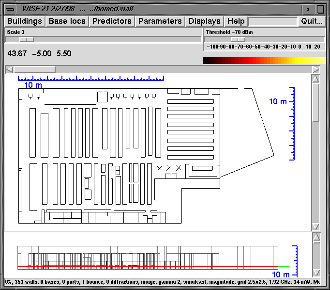
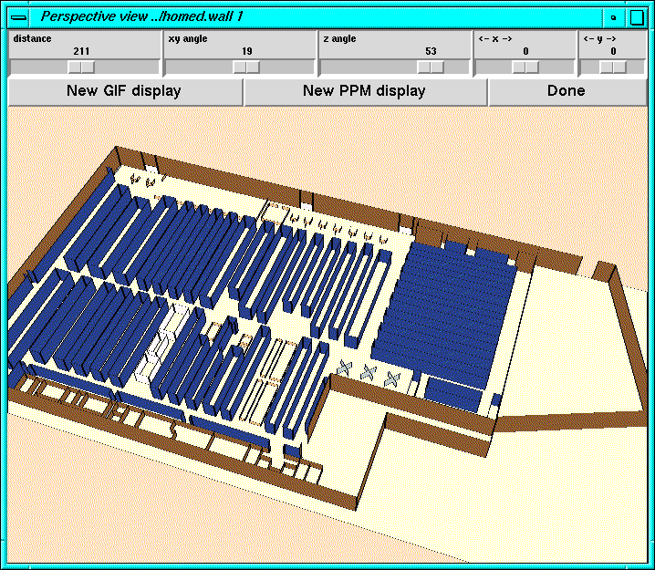
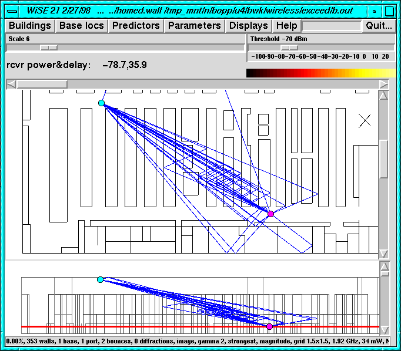
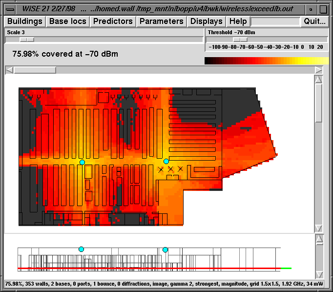
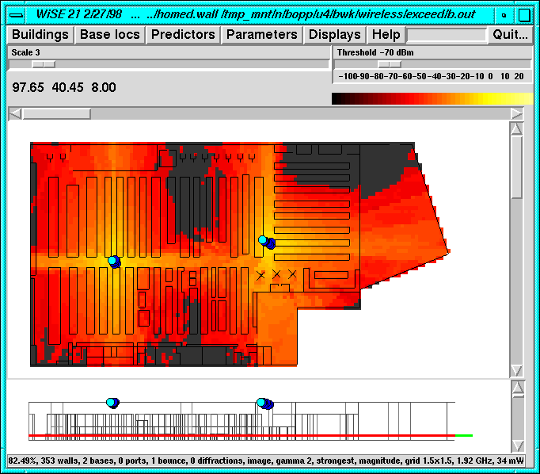
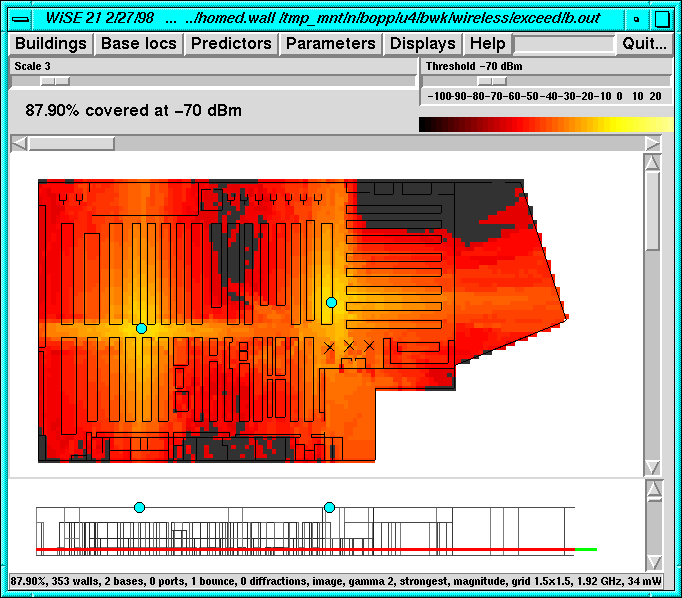
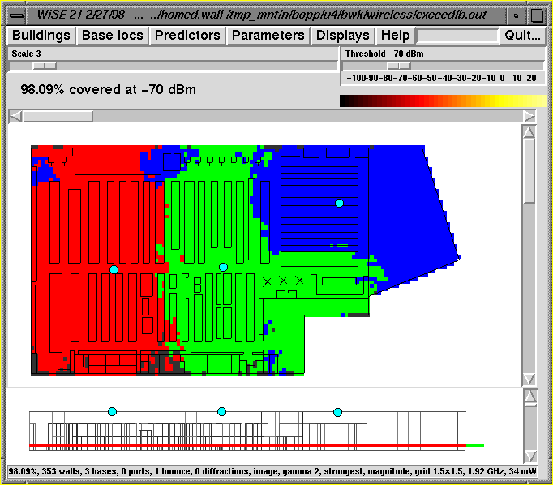
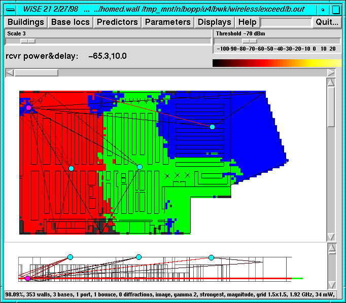
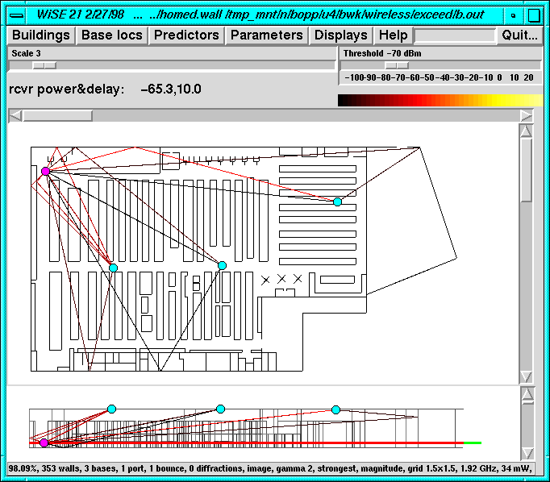
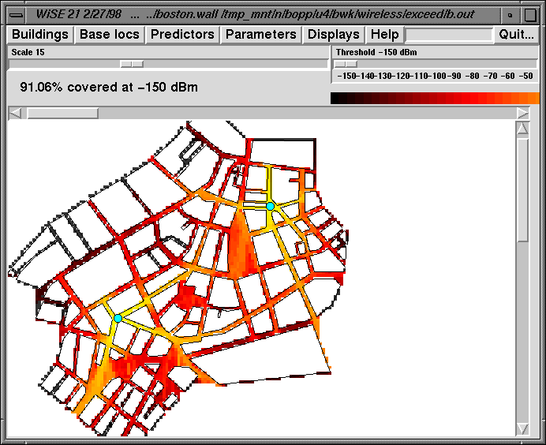

Wise is a system developed by Bell Labs for
helping to design indoor and outdoor wireless systems,
focusing on where to put base stations to ensure proper radio
coverage throughout some area.
Wise is a system developed by Bell Labs for
helping to design indoor and outdoor wireless systems,
focusing on where to put base stations to ensure proper radio
coverage throughout some area.
Wise is a system developed by Bell Labs for
helping to design indoor and outdoor wireless systems,
focusing on where to put base stations to ensure proper radio
coverage throughout some area.
Wise is a joint effort by several Bell Labs research and development groups. Wise is being used to design in-building systems for the Personal Wireless Telephone and is also one of the prediction components used to design outdoor cellular networks. For more information on research aspects, look at the Wise home page, which includes more references and a cast of characters, or read a paper from IEEE Computational Science and Engineering that, though several years old, is still accurate.
Wise has three major components:
Wise is a good example of interdisciplinary work: radio prediction models, computational geometry, mathematical optimization, and graphical user interfaces come together into an effective and efficient tool.
Here's an example of the kind of building for which Wise is useful: a large store, about 150 meters by 100 meters. The picture shows plan and elevation views, and the rulers show the dimensions.

The next picture shows a perspective view of the building. Walls of different materials are shown in different colors; the type of material that a wall is made of affects how radio waves go through and bounce off it. The exterior walls are concrete; the blue areas are steel shelves; other interior structures are wood, sheetrock, or glass.

Wise predicts radio coverage in a building by tracing rays from each base station to each point in the building. There are an enormous number of such rays, so the Wise algorithm makes extensive use of computational geometry to cut the number of computations down to something manageable. Here are some rays from one base station to one receiver point. Only paths with at most two bounces are shown.

The next step is to place some base stations, and let Wise predict the radio coverage throughout the building. A new base is added by selecting "Add a base" from the "Base locs" menu and dropping it onto the plan view; it can then be moved anywhere on the plan and elevation views.

The color pattern shows the intensity of radio signal strength at each point; points where the signal is below -70 dBm are shown in gray; coverage isn't adequate at such points.
The building is 76 percent covered (shown just above the picture, towards the left), which isn't good enough. We could move these base stations around ourselves to try to do better, or let the program try to move them around for us (optimization), or just add more base stations (which costs more money).
The next picture shows the effect of moving the base stations a small distance towards the previously uncovered areas: the coverage goes up to 82.5 percent, which isn't bad, though still not good enough.
The next step is to let Wise optimize the base positions itself. This is mathematically quite difficult, so there's no guarantee that things will improve, but it's worth a try. After a considerable amount of computing, Wise finds slightly different positions for the bases, and increases the coverage to 87.9 percent. Wise actually finds a sequence of improvements; the dark blue circles represent base positions found during optimization that were better than the previous best value.

The coverage map is left over from the original base positions; here's the new coverage map:

This is quite a bit better, but it seems unlikely that 100 percent coverage will be reached with only two bases. Here's the result of adding one more base, and moving the original two around a bit:

This achieves 98 percent; with luck, optimization might be able to get this all the way to 100 percent.
Each point in the building receives signals from all bases, one of which is strongest. The next picture shows which base gives the strongest signal at each point. Because radio waves bounce around so much, it's quite possible for the strongest signal at a point to come from a more distant base. Note especially the disconnected blue regions that are far away from the rightmost base station, but still receive their strongest signal from it, probably because of strong bounces off relatively unimpeded paths.

This picture shows the zero- and one-bounce rays from each base to a receiver point in the upper left corner.

This is the same picture with the colored background removed; the rays might be seen more easily:

Although the pictures shown above are for indoor predictions, Wise is also used for outdoor predictions. There are several ways to model outdoor environments, and several prediction algorithms that balance accuracy against speed. The picture below shows a prediction for downtown Boston, treating the city as a set of ``urban canyons,'' that is, infinitely tall buildings that fill the entire area except for streets. The prediction itself is based on six bounces and includes diffraction effects.
